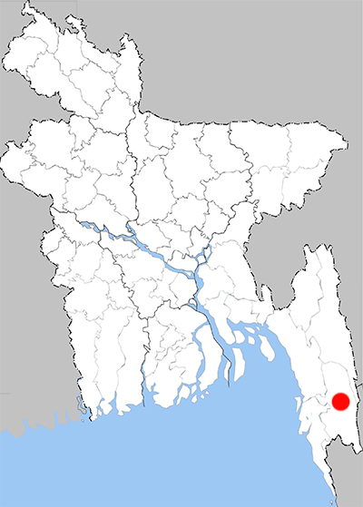

Abisara neophron
Tailed Judy
Recorded Place: Bandarban

Literature Records:
Chowdhury, S.H. & M. Hossain, 2025; PP: 365;. Butterflies of Bangladesh-A Pictorial Handbook (Revised and enlarged version II). Dhaka, Bangladesh, 260pp.